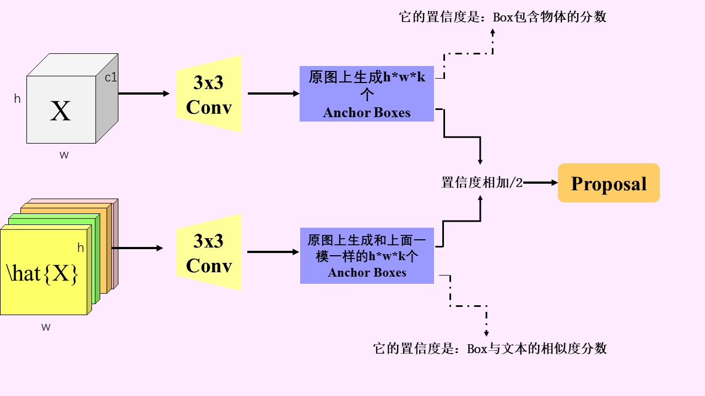

Zimo Li (李子茉) |
Journals:
|  | [1] Cross-Modal Dynamic Learning Networks for Text-Based Person Retrieval. |
Conferences:
[1] Zimo Li, Zhiyuan Luo, Weisi Lin*, and Xuan Jing, “xxxx,” Proceeding of the IEEE International Conference on Multimedia and Expo (ICME), 2023. (CCF-B)
Membership:
Journal Reviewer(Fake it, don't copy it.):